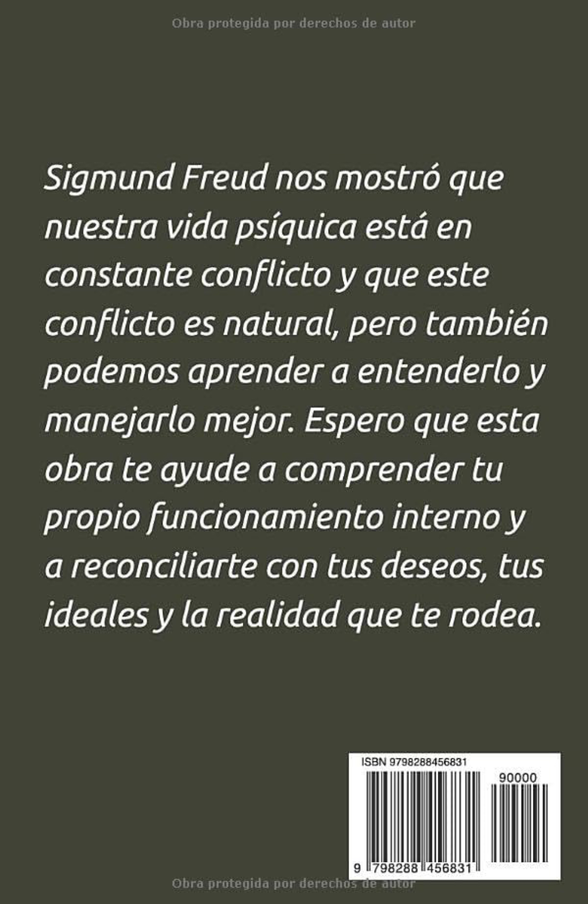
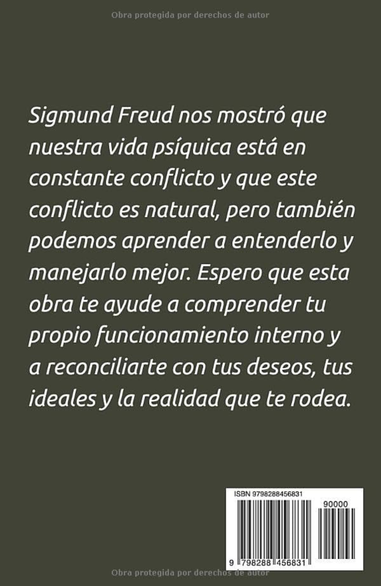

Conferencias que accionan mentes

Motivación Sostenible
Del impulso inconsciente al hábito visible en una semana.
Más detalles
- Origen del deseo: mapeo de impulso auténtico vs metas introyectadas
- Alianza del Yo: refuerzo de la instancia mediadora
- Circuito de refuerzo: plan de 7 pasos inconscientes
Ansiedad Productiva
Sublima la presión en creatividad y resultados.
Más detalles
- Matriz de defensas: represión, formación reactiva y proyección
- Reencuadre psíquico: revisión de fantasía persecutoria
- Canal de sublimación: micro-proyecto inmediato
Conversación Estratégica
Del silencio oculto al feedback transformador.
Más detalles
- Mapa de transferencias: expectativas y miedos proyectados
- Role-play de reenactment: actualización de narrativas internas
- Test de resonancia: evalúa la transformación emocional

 
